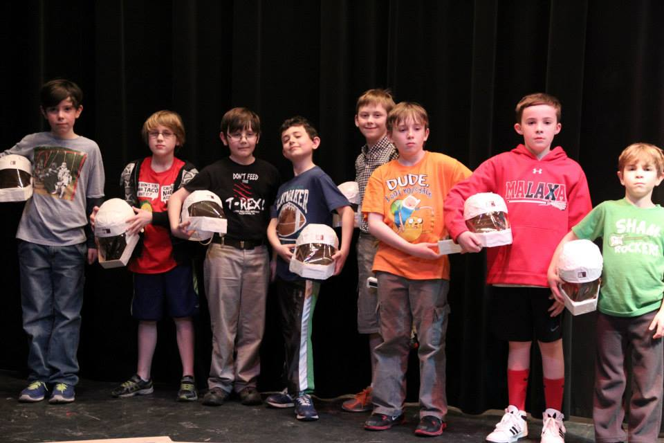
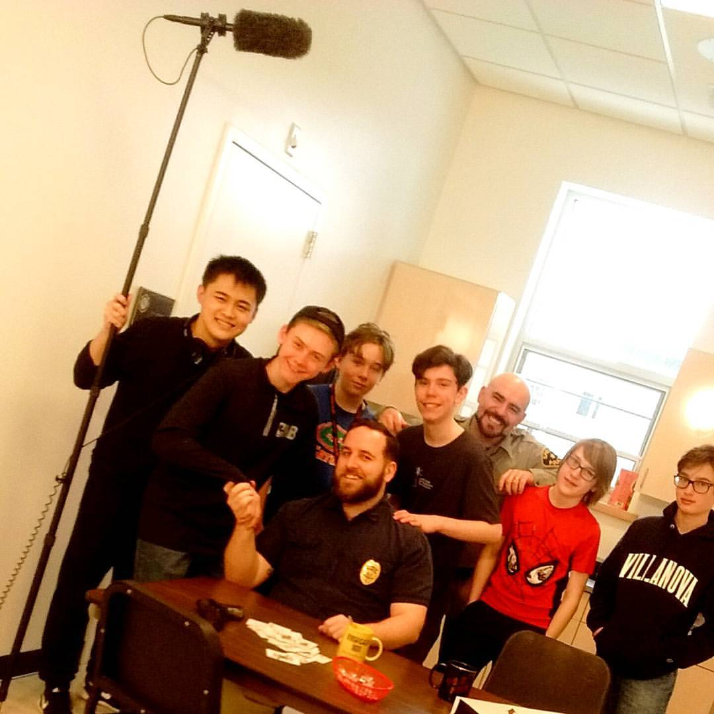
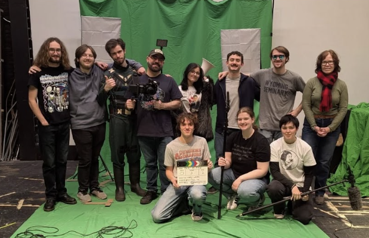

Our Story
From our very first days as friends back in kindergarten, the three of us have been telling stories. As inaugural members of the ‘Haunted House Club’, we chased ghosts during recess, passed on terrifying tales, and uncovered the secrets of the school basement. On the battlefield (or backyard), we partook in hours-long epics, inspired by our favorite superheroes, Jedi, and Transformers, with unrelenting zombies and evil little siblings proving mighty opponents. Our weekends were filled with the likes of DreamWorks, Pixar, Cartoon Network, and Disney, all of which fueled our wild imaginations with creative inspiration.
By middle school, we had upgraded to a professional production company and had brought to life a series of short films, like our debut, “Transformers are Real,” the perpetually underrated “Paradox,” and the dramatic saga, “The Mystery of Mineral,” parts one and two. With a small but mighty YouTube following, and with the help of some incredibly devoted parents, our middle school days were spent writing and shooting anything our brains could cook up. We tried our hand at a comedic buddy cop romp, a time-traveling epic, a dramatic mini-franchise of our own, and a meta, genre-switching exploration of cinema history. Our hard work paid off in a big way when our film “Pick Again” was awarded ‘Best High School Student Film,’ beating out dozens of high-school age competitors while we were only in eighth grade.
As we garnered more and more experience, our quality began to improve. We started focusing on the truly important stuff, like conveying emotions through dialogue and really telling a story through film, instead of just cool concepts and fun settings. At sleepovers, we watched horror movie after horror movie, marveling at each one that was able to totally terrify us, and trying to understand how, exactly, it had. Movies like Sinister and Hereditary left us shells of ourselves—and we loved it! Horror games like Resident Evil and Until Dawn enthralled us with their seamless blend of jump-scares and hair-raising reveals. Unsurprisingly, our friend group fell in love with physically going to the movies, which became a near-weekly occasion. Our trips to the cinema coincided with the peak of Marvel’s Cinematic Universe, brand-new Star Wars films, and the impossible-to-look-away-from DC Extended Universe. We came to realize that money didn’t make a movie great—its heart and soul did.

As we ventured through high school, we pioneered a film club, where all students were invited to join us in learning everything we could about filmmaking, storytelling, and the challenges of translating an idea from script to screen. While it wasn’t always easy to work with newcomers, learning to collaborate with people outside our circle was vital in our growth as creatives.
